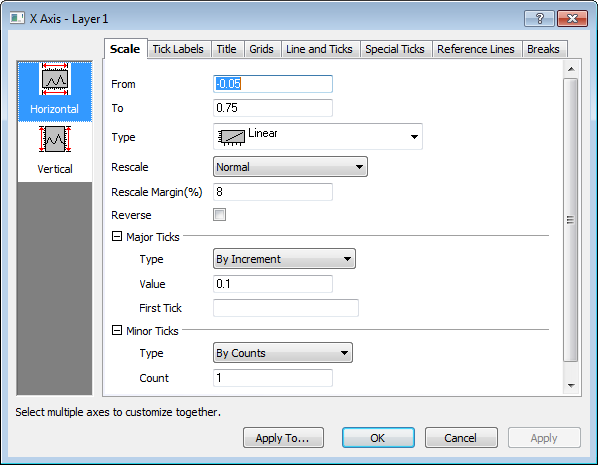
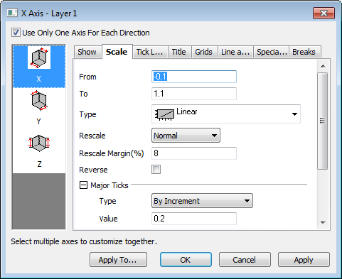

Der Dialog Achsen ist ein auf Registerkarten basierender Dialog mit Bedienelementen zum benutzerdefinierten Anpassen von Achsen in den meisten 2D- und 3D-Diagrammen.
In diesem Dialog gibt es 8 Registerkarten (die Registerkarte Zeigen wird für 3D- oder Ternärachsen verwendet. Multi-File (except 1st) Import Mode Um diesen Dialog schnell zu nutzen, wählen Sie zuerst ein oder mehrere Symbole (halten Sie die Strg-Taste gedrückt, um mehrere Symbole zu markieren) im linken Bedienfeld aus. Diese/s Symbol/e kennzeichnet/n die anzupassende/n Achse/n. Wählen Sie dann im rechten Bedienfeld eine Registerkarte und verwenden Sie die Bedienelemente, um die Achseneigenschaften benutzerdefiniert anzupassen.
Zusätzlich zu den 7 Registerkarten steht auch eine Schaltfläche Anwenden auf... zur Verfügung, die den Dialog Anwenden auf öffnet. Mit diesem Dialog können Sie die Achseneinstellungen von einer Achse auf andere Achsen übertragen.
Auch das Kontrollkästchen Nur eine Achse für jede Richtung verwenden ist eine globale Einstellung, die nur für 3D-Achsen verfügbar ist. Wenn es aktiviert ist (Standardeinstellung), wird nur ein Satz von XYZ-Achsen im 3D-OpenGL-Diagramm gezeigt. Ansonsten wird eine zusätzliche Achse in jeder Richtung angezeigt, so dass insgesamt 6 Achsen zu sehen sind: Vorn - X, Hinten - X, Unten - Y, Oben - Y, Links - Z, Rechts - Z.
|  |
| Dialog Achsen für die meisten 2D-Diagramme |
|  |
| Dialog Achsen für die meisten 3D-Diagramme |
| Hinweis: Vor Origin 9.0 wurden 3D-Grafiken mit Hilfe von GDI (Windows Graphics Device Interface) gerendert. Ab Origin 9.0 verwendet Origin OpenGL zum Rendern von 3D-Grafiken. Wenn Sie OpenGL jedoch für Ihre Grafiken ausgeschaltet haben, wenn Sie ältere Origin-Projektdateien öffnen oder wenn Sie mit den wenigen Origin-Diagrammtypen arbeiten, die OpenGL nicht unterstützen, dann verwenden Sie noch den älteren Dialog Achsen mit mehreren Registerkarten, um Achseneinstellungen festzulegen. |
Die Bedienelemente auf diesen Registerkarten werden ausführlich auf der Unterseite dieses Kapitels erläutert.